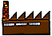

Le bureau carrières

Le bureau carrières
12, rue Martin Bernard, Paris 13ème
Responsable: Marie-Christine Le Garff

Dès l'entrée à l'Ecole, le Bureau Carrières est
à la disposition des élèves :
- pour aider à définir les projets professionnels :
- quel type de travail ?
- dans quel secteur ?
- dans quelles conditions ?
- pour donner des indications sur l'état du marché
- fonctions ou profils les plus demandés,
- salaires pratiqués,
- résultats d'enquêtes réalisées par la
presse,
- spécialisée et le Bureau Carrières lui-même,
- offres d'emplois disponibles ;
- pour aider à la recherche d'emploi :
- entreprises à contacter,
- rédaction d'un curriculum vitae,
- démarche à adopter ;
- les outils disponibles :
- un bulletin bi-mensuel d'offres d'emplois,
- un centre de de documentation : 250 dossiers d'entreprises
(rapports d'activité, plaquettes de
présentation),
- annuaires professionnels,
- revues et ouvrages spécialisés dans le recrutement,
- des fiches pratiques sur les techniques du recrutement
(élaboration de CV, rédaction de lettres de motivation,
pratique de l'entretien) ;
Enfin, le Bureau Carrières pourra continuer à aider le
diplômé au cours de son activité professionnelle.
Les stages


Page créée par Deborah LEWINER